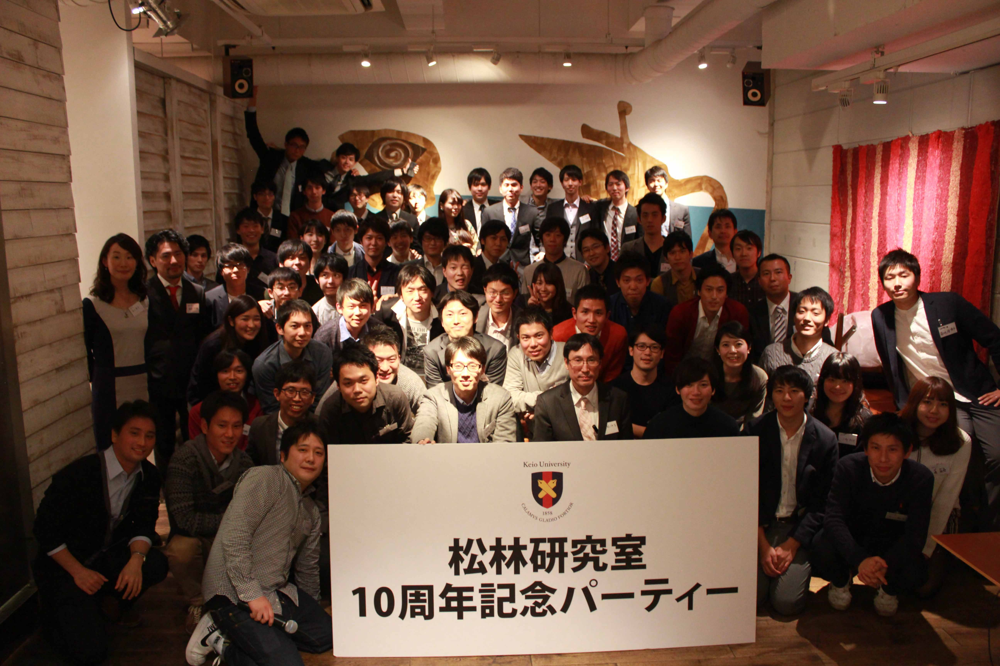
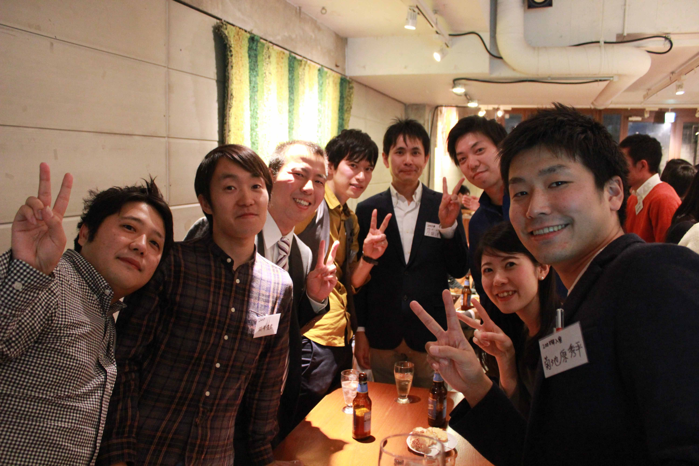
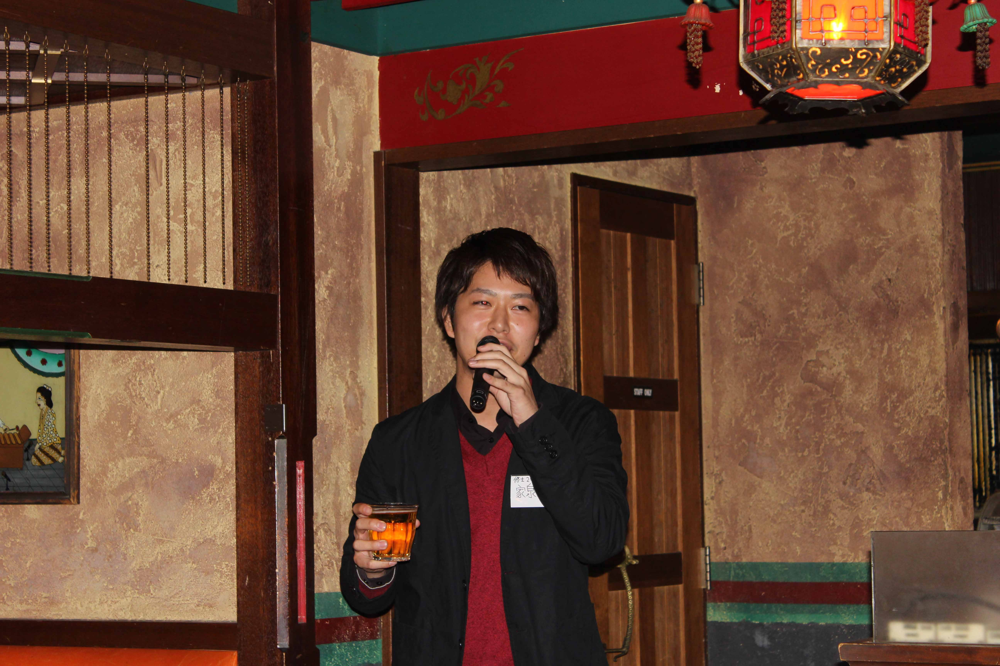
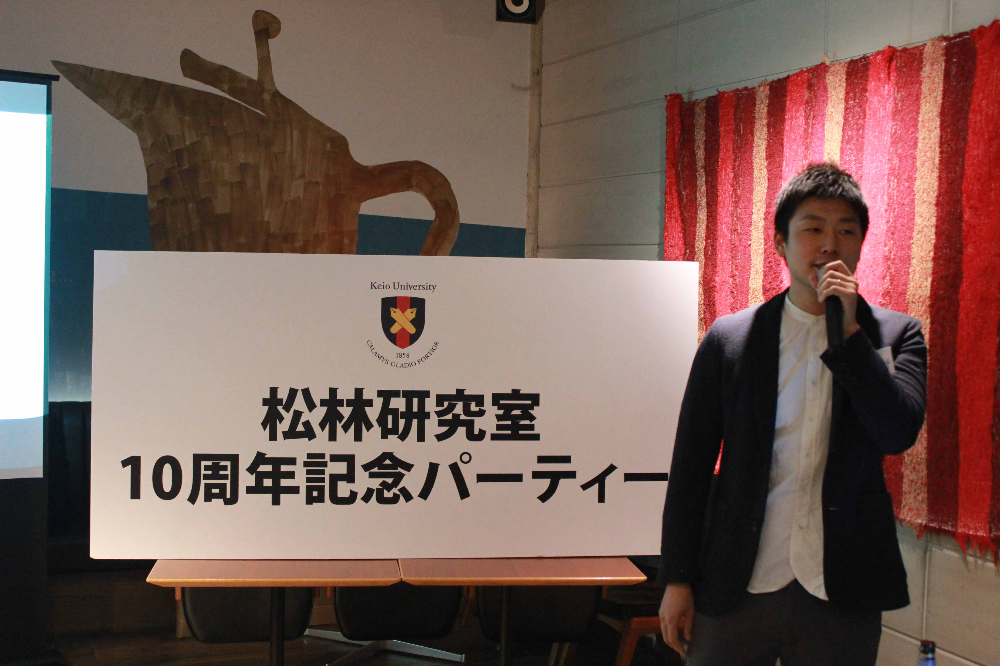
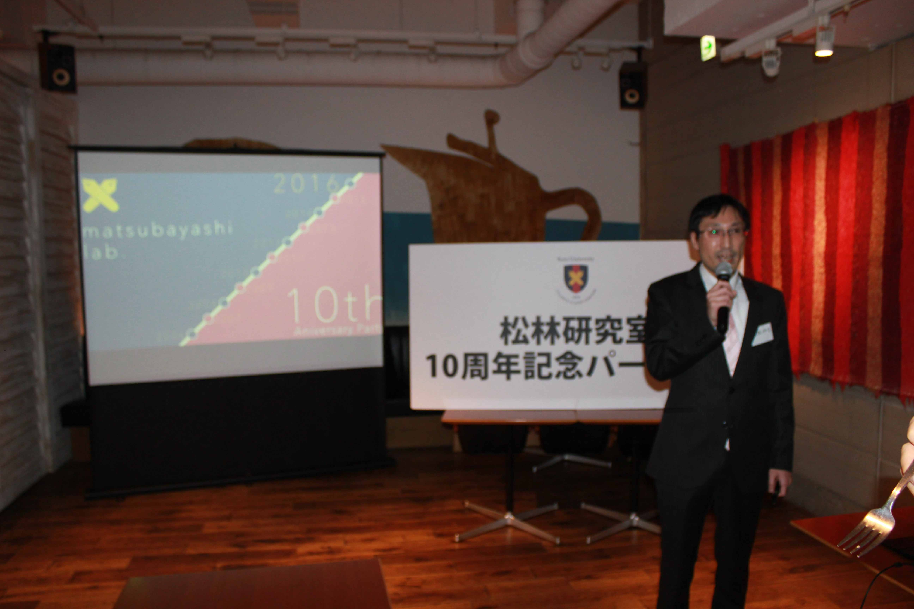
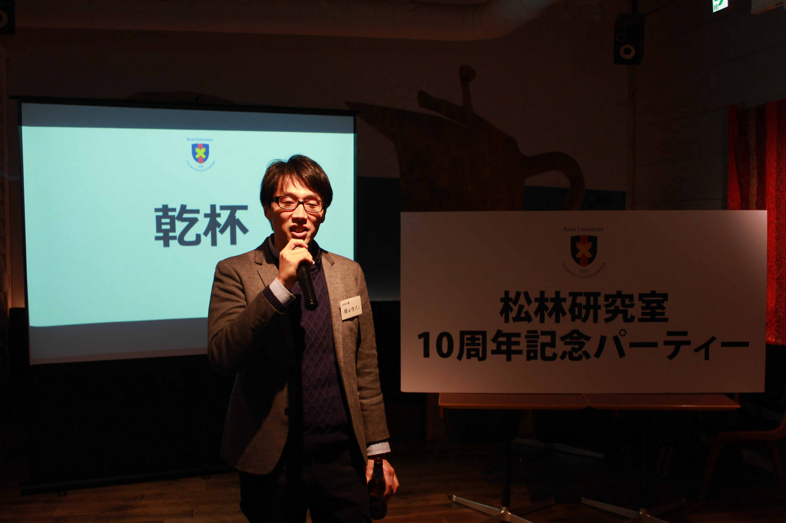
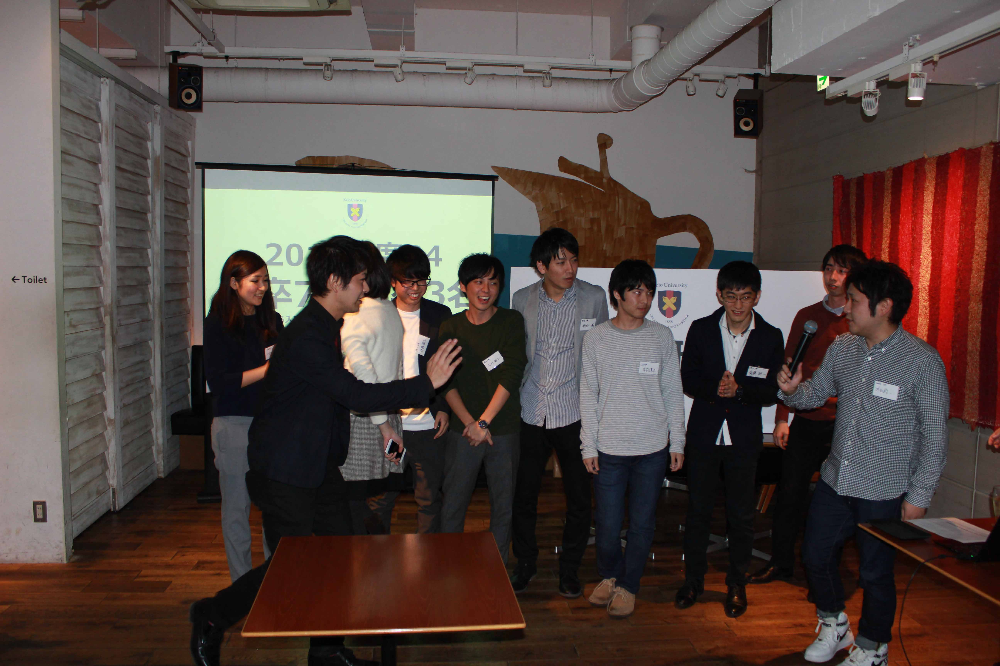

2006年の開室以来、今年（2016年）で当研究室は10周年を迎えました。
これを記念して11月26日（土）の夜にOB・現役合同のパーティーを企画しています。
詳しくはこちらをご覧下さい。
|  |
|  |
|  |
|  |
|  |
|  |
|  |
| 時間 | 内容 | 担当 |
| 17:00～ | 入り | |
| 受付開始 | 現役生2名 | |
| 17:30 | 教員挨拶 | 松林伸生 |
| 17:35 | 乾杯 | 飯田哲也（2006年入室） |
| 17:40 | 歓談 | |
| 18:00 | 10周年振り返り（プレゼン） | 松林伸生 |
| 18:25 | 卒業生近況報告（1人30秒） | 出席者全員 |
| 19:05 | 現役近況報告（1人30秒） | 現役全員 |
| 19:20 | OB代表挨拶 | 牛島証（2006年入室） |
| 19:25 | 記念撮影 | お店に依頼 |
| 19:29 | 一本締め | 雲井雄基（2009年入室） |
| 19:30～ | 撤収 |